Chapter 6 · Part 2 — High Jump
Jack looked at the black sky. The flying thing was nowhere in sight—yet.
“We’ll have to jump over it,” Annie said.
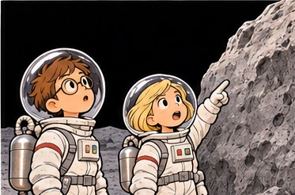
“Jump? I don’t think so,” said Jack. “It’s too high.”
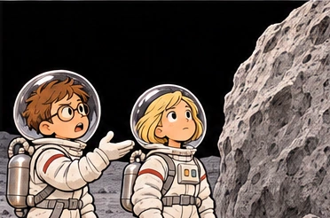
“I’m going to try anyway,” said Annie.
“Wait. Let’s think first,” said Jack.
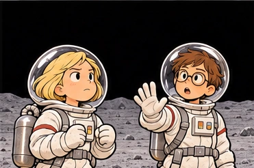
But Annie was already backing up.
“One, two, three—go!” she shouted, and took giant, leaping steps toward the meteorite.
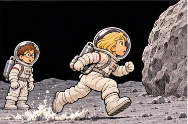
When Annie got close to the rock, she pushed off the ground. Then she flew through space and disappeared behind the meteorite.
“Annie!” Jack called.
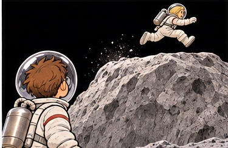
There was no answer.
“Oh, brother,” Jack said. He backed up and took off toward the rock. He jumped as high as he could. Then he was flying through space.
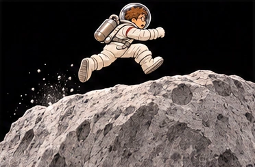
Jack hit the ground and fell facedown into the dust.
Jack tried to stand. But his suit was too bulky. He tried to roll over. But his suit made even that impossible.
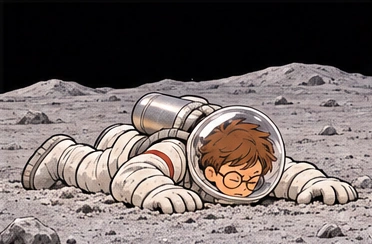
“Oh, no,” he groaned. “Not again.”
“Are you here?” asked Annie. “Did you make it?”
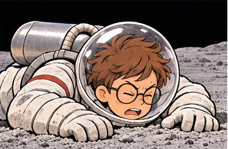
“Yes!” Jack was relieved to hear her voice. But he couldn’t turn his head to see her. He could only hear her over the radio.
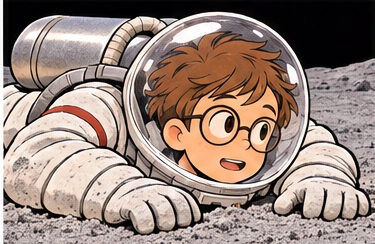
“Can you help me up?” he asked.
“Nope,” said Annie.
“Why not?”
“I fell down, too,” she said.
“Oh, brother,” Jack sighed. “Now we are really in trouble.”
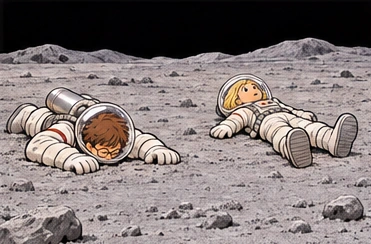
He tried to stand again. And failed.
“Can you see anything?” he asked.
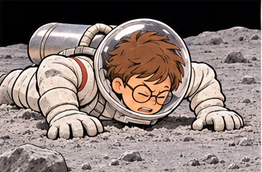
“Just the sky,” said Annie. “Wow, is it weird … ”
“I’m worried about our air tanks,” said Jack. “I feel like it’s been two hours.”
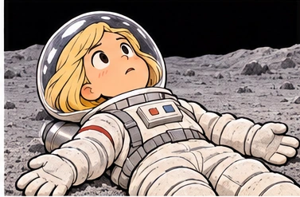
“Ja-ack … ” said Annie.
“And what about that moon man?” said Jack. “Where did he go to?”
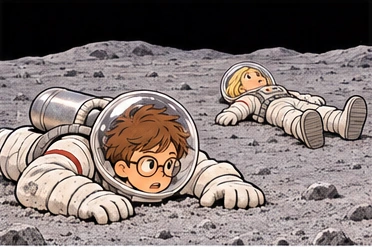
“Jack!” whispered Annie.
“What?”
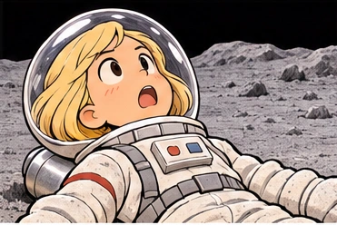
“He’s here,” she said. “The moon man is here.”
“What?”
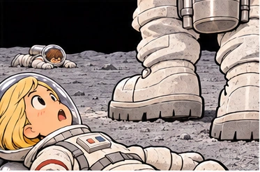
“He’s standing above me.”
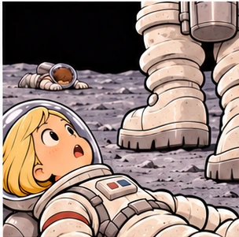